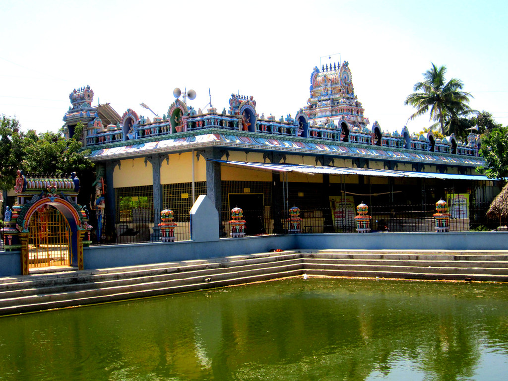
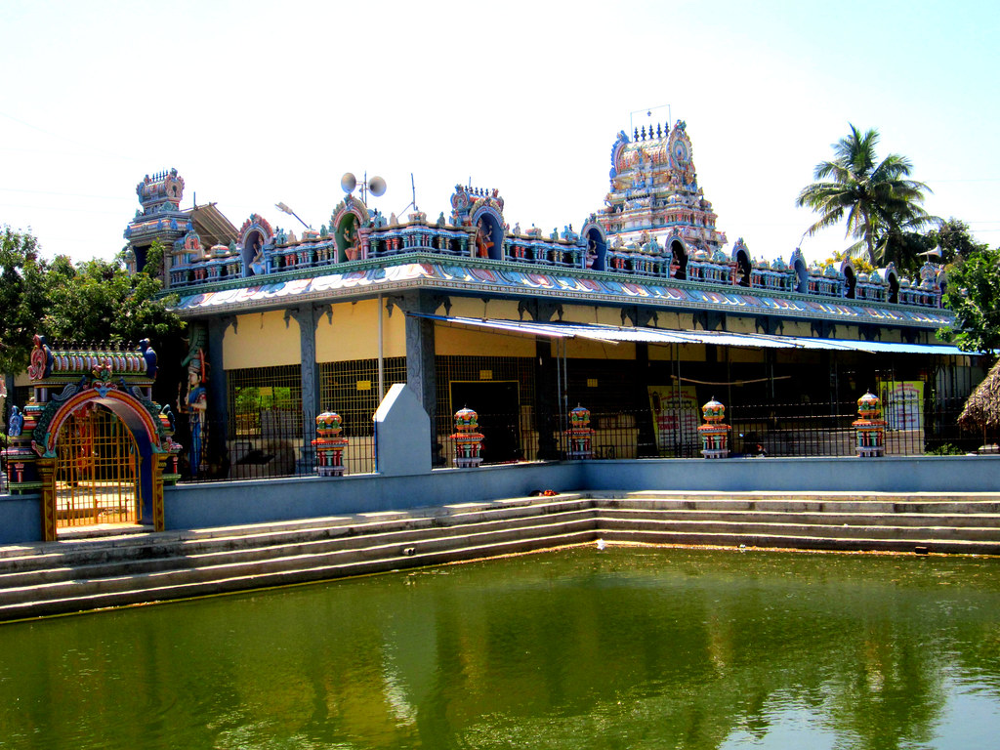

Motif peint ou posé sur le front des hindoues.
Traditionnellement, un bindi,
tache rouge ou noire ou encore un bijou,
signifiait que la femme était mariée :
elle l'avait obtenu à la cérémonie du mariage.
l’Inde apparaissent les vêtements portés par les femmes comme par les hommes.
Un véritable festival de couleurs,
des tissus chatoyants à la texture soyeuse
et aux broderies riches et délicates incarné par un vêtement en particulier : le sari indien.
Cette longue pièce de textile atteignant parfois 10 mètres de long,
que la femme plie savamment autour de sa taille et ramène au-dessus de son épaule,
apparaît comme la tenue traditionnelle indienne féminine emblématique.
Les épices indiennes et ingrédients que le plus souvent pour la cuisine indienne sont l’ail,
le gingembre frais, la coriandre le cumin, le piment, les mélanges d’épices type tandoori, girofle.
L’importance du riz dans la cuisine indienne n’est plus à démontrer,
personnellement quasiment que du riz basmati,aux grains fins et longs et parfumés.
J’ai d’ailleurs publié un petit article avec des astuces pour bien réussir la cuisson du riz.

Agraest située dans capital delhi
il est symbolique de amour de sa femme
shajahan est cree pour sa femme mumtaj
L'histoire a laissé une marque indélébile sur Amritsar,
une ville qui porte l'héritage d'être le centre de la religion sikh.
C’est également l’endroit où s’est produit l’un des chapitres les plus tragiques de la lutte pour la liberté en Inde
- le massacre de Jallianwala Bagh.
Dalhousie, chef-lieu du comté de Restigouche depuis 1837, est située sur la rive sud de la Baie des Chaleurs.
Dalhousie a reçu son nom en 1826,
en honneur du neuvième comte de Dalhousie,
Dharamsala est une petite bourgade de 30 000 habitants qui se trouve dans le nord de l’Inde.
La ville de Macleod fut fondée dans les années 1850 en qualité de ville de garnison britannique.
Le nom d'ailleurs Macleod ne fait pas très indien il est vrai,
il s'agit en fait du nom de David Macleod (plus anglais tu meurs) qui était lieutenant gouverneur de l'Etat Indien du Punjab.
kasauli Situé dans l’État de l’Himachal Pradesh en Inde,
Kasauli est une ville très populaire dans la région en raison de sa riche histoire et le beau temps.
Il y a un certain nombre d’attractions de la ville et la plupart d’entre eux sont reliés à son histoire.
Haridwar La ville de Haridwar est très ancienne.
Elle est citée par les voyageurs chinois du VII e siècle.
La ville porte la présence de la trimurti hindoue: Brahma, Vishnu et Shiva.
Manali est la mecque pour les voyageurs à la recherche de sports aventureux
et de vacances adenaline en Inde.
Grâce à la beauté pittoresque de l'Himalakh Pradesh,
Manali, avec son histoire et sa culture,
est aussi appelée la Vallée des Dieux
Mathura (ou Brajbhoomi) est célèbre comme lieu de naissance de Lord Krishna,
une divinité importante dans le panthéon religieux hindou.
C'est un important lieu de pèlerinage des Hindous et l'une des sept villes sacrées de l'Inde.
Le principal centre de pèlerinage de Mathura est le temple Shri Krishna Janmabhoomi.
Mathura est également un important centre d'artisanat.
 

Thanjavur est également la ville principale du district de Thanjavur.
Autrefois le fief de la dynastie Chola,
elle est, plus tard, gouvernée par les nayaks des râjas du Vijayanagara, puis par les marathes.
Thanjavur est célèbre pour le temple de Brihadesvara construit par Rajaraja Chola,
le premier raja qui bâtit un empire maritime.
Ce temple de Brihadesvara, dédié à Shiva,
La danse est ici accompagnée par un poème ou une chanson sur un thème dévotionnel ou amoureux.
Cette danse parle souvent des dieux, racontant une histoire ou un récit épique.
Dans le déroulement d'un récital, c'est la première danse narrative,
développant l'abhinaya qui signifie l'expression du visage ou du corps.
Next